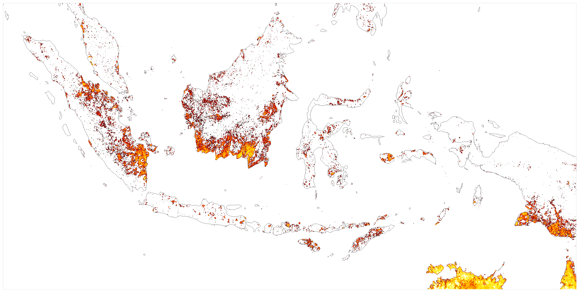
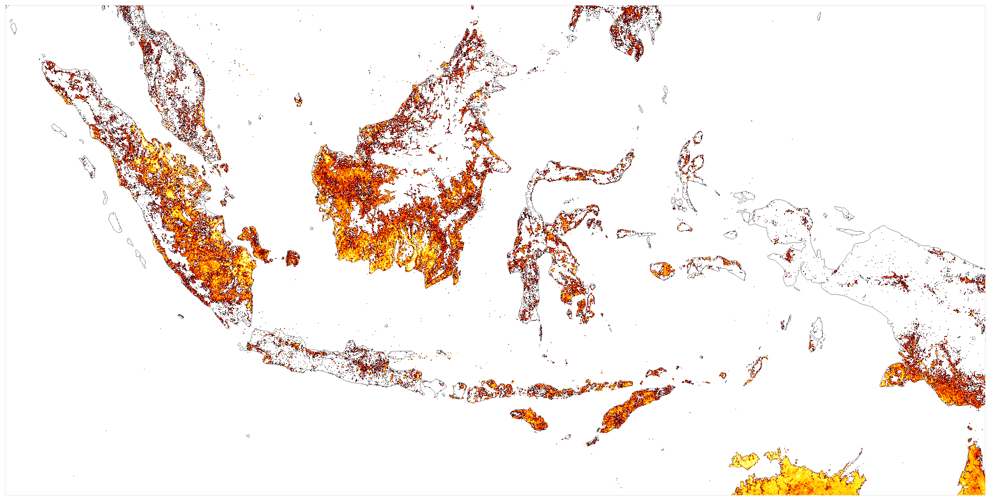
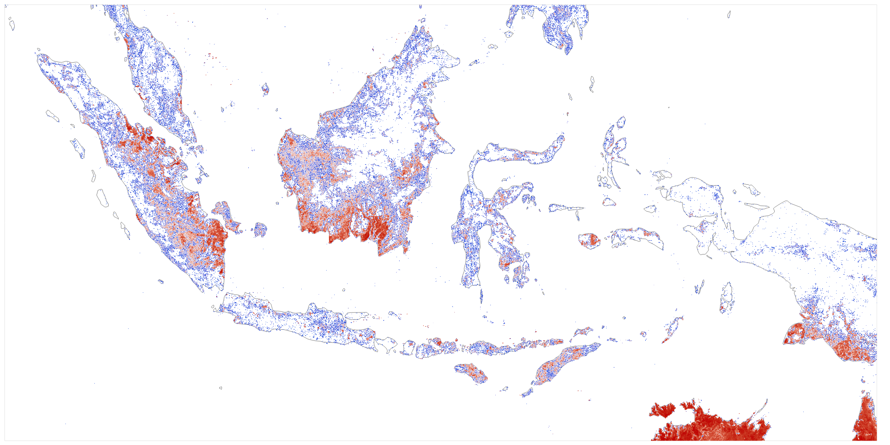
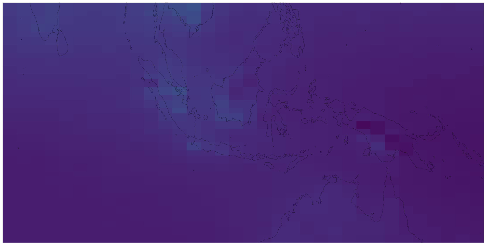
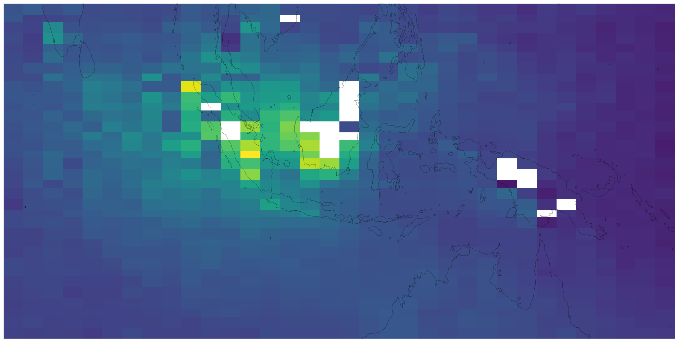
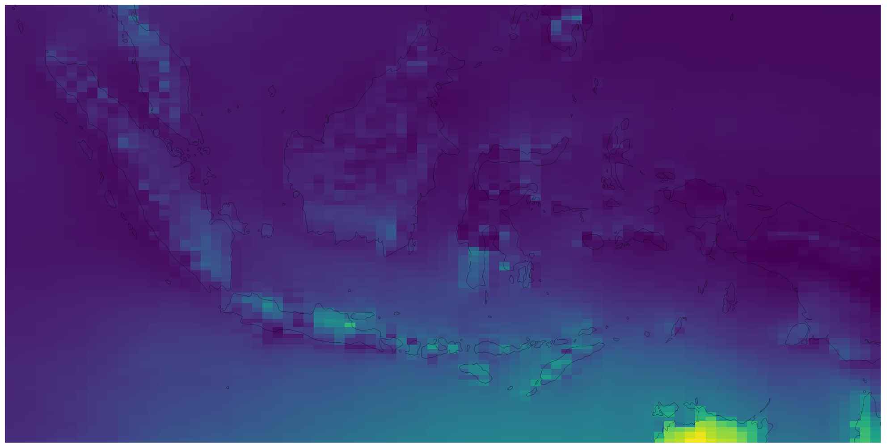
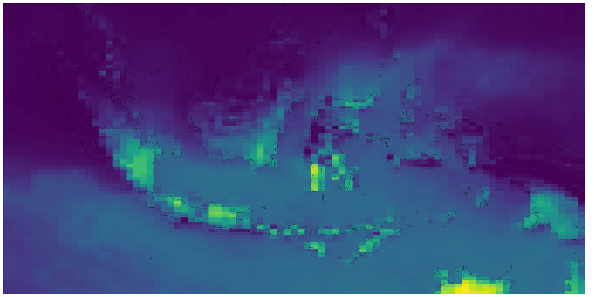
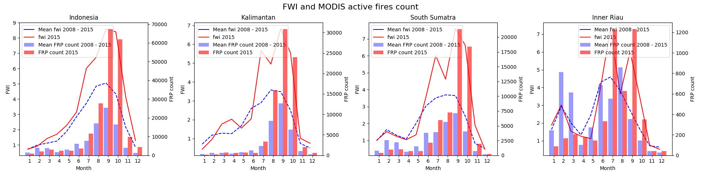

WP1: Develop seasonal fire occurrence forecasts...
In order to fulfill WP1 (and others) we need to
crunch large fire and climate datasets
Fire occurrence observations
Geostationary - Polarorbiting - Aerial - Ground Surveys
MODIS fire products
Burned area (MCD64A1) - Active fires (M*D14)
MCD64A1 Burned area 2002 - 2015

MODIS Active fire 2002 - 2015

MCD64A1 - Active fire 2002 - 2015

Peat fire observations - challenging
Alternative datasets?
Mean MOPITT CO column 2008 - 2015

Mean MOPITT CO column Sep - Oct 2015

Climate datasets - ECMWF
ERA5 - SEAS5
Both ERA5 and SAES5 are currently state of art
30 km spatial and 1 to 6 hour temporal resolution.
Large number of parameters at surface and up to
137 vertical levels.
ERA5 based mean FWI 2008 - 2015

ERA5 based mean FWI 2015 Sep - Oct

FWI vs MODIS active fires

Data sharing infrastructure
Server - Cloud - Email